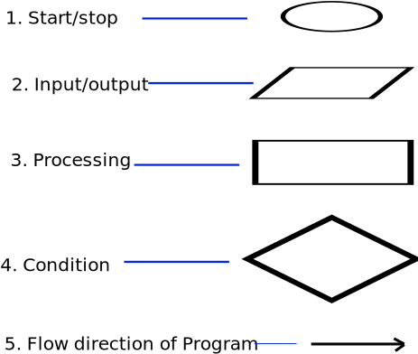
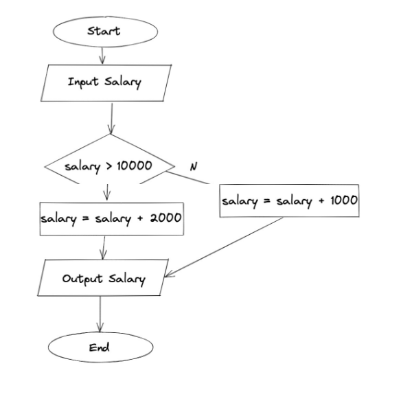
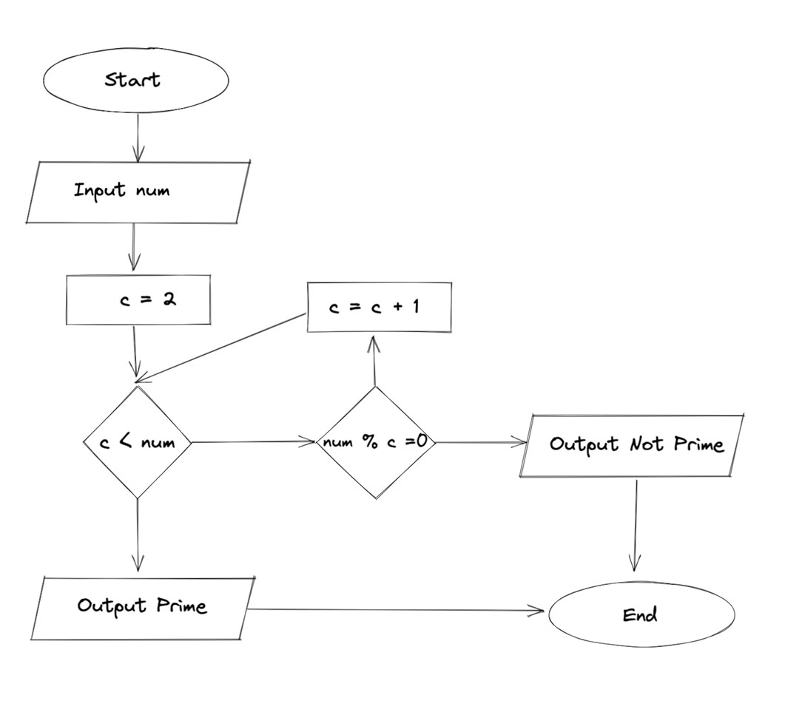

Flow Chart → Visualization of out thought process of Algorithm and represent them diagrammatically is called flow chart.

Example 1 → Take a name and output Hellow name.
Example 2 → Take input of a salary. If the salary is greater than 10,000 add bonus 2000, otherwise add bonus as 1000.

Example 3 → Input a number and print whether it is prime or not.

It is like a rough code which represents how the algorithm of a program work.
Pseudocode of Example 2
start
Input salary
if salary > 10000 :
salary = salary + 2000
else :
salary = salary+1000
output salary
exit
Pseudocode of Example 3
start
input num
if num ≤ 1
print "neither prime nor composite"
c = 2
while c < num
if num % c = 0
output "not prime"
exit
c = c + 1
end while
output "prime"
exit